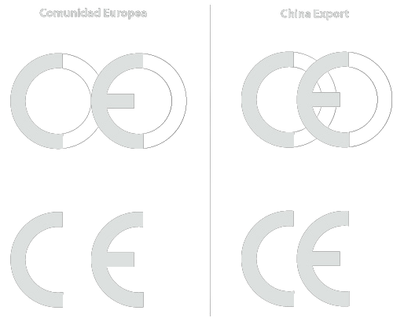

Bezpieczeństwo techniczne
- Obiekty,pomieszczenia pracy
- Maszyny, urządzenia techniczne
- Energetyka, transport
- Materiały i surowce
- Dokumentacja budowlana | techniczna | ruchowa
DTR - Dokumentacja techniczna ruchowa

Higiena pracy
- H. Pomieszczeń pracy
- H. Pomieszczeń technologicznych
- H. Osobista pracowników
- Zaplecze sanitarno higieniczne
- Środki higieniczne
Prawna ochrona pracy
- O. Stosunku pracy
- O. Wynagrodzenia
- O. Waryunków pracy
- O. Organizacji w pracy
- O. Pracy kobiet i młodocianych
- O. Świadczeń pracowniczych
MAX Przenoszenie wagi
| Praca |
M |
K |
| Stała |
30KG |
12KG |
| Dorywcza |
50KG |
20KG |
Praca dorywcza = MAX 4 razy na godzinę, MAX 50M na raz
MAX Wysiłek
KK - Kilokalorii. Jeśli wysiłek większy od normy - pracownikowi
przysługuje posiłek.
Wymogi dla pomieszczeń pracy
Na pracownika powinno przypadać min 13m3 objętości oraz 2m2 podłogi. MIN wysokość:
- 3M jeśli nie ma czynników szkodliwych
- 3.3M jeśli są czynniki szkodliwe
- 2.5M jeśli MAX 4 pracowników
- 2.2M jeśli to jest kiosk
Wentylacja
-
Ogólna:
- Naturalna: infiltracja, aeracja, grawitacja
- Mechaniczna: wywiewna, nawiewna, nawiewno-wywiewna
-
Miejscowa:
Jeśli czynnik szkodliwy cięższy od powietrza - wentylacja w podłodze. W kotłowni nie wolno wentylować
Dopuszczalna temperatura
- Biura >= 18°C
- Mieszkania, sale posiedzeń 20°C
- Pom. z pracą fizyczną >= 14°C
- Rozbieralnie, szatnie, pływalni, gabinety lekarskie 24°C
- < 0°C przysługuje ciepły napój, odzież, pomieszcz. do ogrzewania
- < 10°C ciepłe napoje i odzież
- > 30°C pom. z klimą i krzesłem
- Pom. do odpoczynku ma 16°C
Oświetlenie
Stosunek okien do powierzchni ma być 1:8
Jeśli w pomieszczeniu ktoś będzie pisał|czytał|obsługiwał kompa to MIN 500LUX
Ciekawostki
Przerwa może być na posiłek, nie na obiad bądź kolację. Jeśli w pracy możesz porwać ubrania, należy ci odzież robocza. W korytarzu trzeba się trzymać środku przejścia. Apteczki są w każdej sali. Taśma ostrzegawcza ma być na wysokości 110cm.